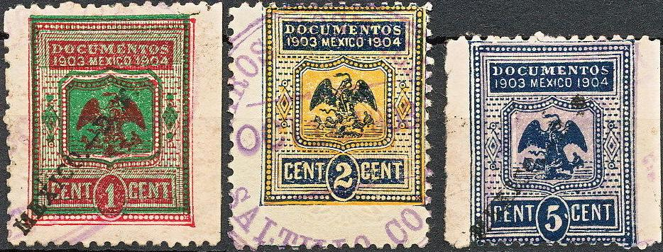

Note: on my website many of the
pictures can not be seen! They are of course present in the
catalogue;
contact me if you want to purchase it.
Examples, inscription "DOCUMENTOS":

"DOCUMENTOS 1903 MEXICO 1904" in this design exist: 1 c
red and green on lilac, 2 c blue and orange, 5 c blue and lilac,
10 c, 25 c, 50 c, 1 P, 5 P, 10 P, 50 P, 100 P and 500 P.
Other fiscal stamps:
Fiscal stamp with arms of Mexico and inscription '1897 1898', 1 P
blue

Timbre Mexico Espeical de Aduanas 1885-1886
Inscription 'CONTRIBUCION FEDERAL 1894-1895'
In the above design were issued: 1 c brown on yellow, 5 c green, 25 c blue, 1 P red and 5 P red on red. They were issued with a tab below (in the above image this tab has been removed).
(Inscription 'CONTRIBUCION FEDERAL MEXICO 1897 1898', 5 P red)
A tab was added to this design at the bottom (removed from the above stamp). Other values that exist are: 1 c orange, 5 c brown, 25 c olive and 1 P blue.
Some of the tabs of the above stamps; 5 c brown and 5 P green
'1892-1893', 1 P blue '1893-1894' and 5 P red'1891-1892'
(Fiscal stamp of 1908, image obtained from Mario Casella)
The above fiscal stamp was issued in 1908, the following values exist: 1 c green, 2 c brown, 5 c red, 10 c blue, 25 c red, 50 c green, 1 P red, 5 P violet, 10 P red, 50 P brown and violet and 100 P brown and blue. The bottom part was often torn of from the stamps.
INSTRUCCION PUBLICA PRIMARIA
The above design was issued in 1890, the
following values exist: 12 c black, 15 c red, 20 c blue, 30 c
green, 40 c grey, 50 c violet, 60 c orange, 70 c brown, 80 c red,
90 c brown, 1 P red, 120 c green, 150 c lilac, 170 c violet and 2
P blue.
Other designs with similar inscriptions were issued in 1889, 1891
(elliptic design), 1892, 1893, 1894 (elliptic design), 1895,
1896, 1897, 1898, 1899, 1900, 1901 and 1902.
The following values exist: in black: 1 c, 2 c, 3 c, 5 c, 10
c, 25 c and 50 c.
In red: 1 P, 5 P and 10 P.
I have seen many of these stamps, with different year indication or overprints. Similar stamps seem to exist for Morelos, Tetecala and Jonacatepec. Also stamps with no district inscription exist. They were all issued around 1877- 1883.
{kind=link}